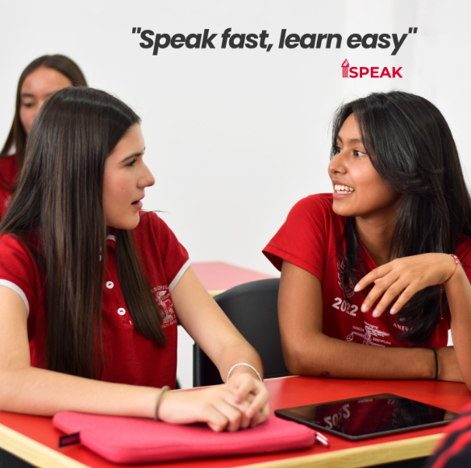

Líderes en Educación Formando líderes del futuro
El Centro Educativo Universitario (CEU) Adolfo López Mateos Campus Poncitlán, conocido como "La Adolfo", es una secundaria privada ubicada en Poncitlán, Jalisco. Nos dedicamos a la formación integral de estudiantes con énfasis en liderazgo, valores, educación bilingüe (a través del programa iSpeak) y actividades extracurriculares como deportes, desfiles, eventos culturales y desarrollo personal. Somos una institución comprometida con la excelencia académica y la formación de jóvenes líderes para el futuro.
Dirección: Priv. Lázaro Cárdenas No. 4, Col. Patria, Poncitlán, Jalisco, México (C.P. 45950)
Teléfono: +52 33 2254 9618
Email: adolfocampusponcitlan@gmail.com
Speak fast, learn easy ⚡️
Programa de inglés 100% conversacional incorporado al CEU Adolfo López Mateos en Poncitlán, Jalisco. Aprende a hablar inglés de forma natural y divertida, como aprendiste tu idioma materno. Ideal para niños y jóvenes que quieren ser bilingües en un mundo globalizado. ¡Súmate al club de los bilingües!

¡Estamos listos para resolver todas tus dudas e inscripciones!